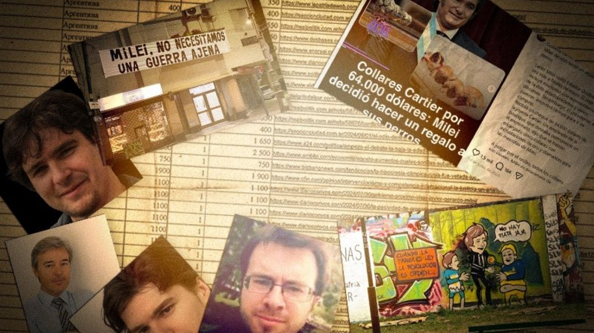

Documentos filtrados revelan cómo Rusia intentó infiltrar medios argentinos para desacreditar al gobierno de Milei
Un consorcio internacional de siete medios de investigación reveló, basándose en 76 documentos filtrados, que una red vinculada a los servicios de inteligencia exterior rusos invirtió cerca de US$283.000 para colocar al menos 250 artículos en más de 20 medios digitales argentinos. El objetivo era desacreditar al gobierno de Milei por su alineamiento con Estados Unidos y su posición favorable a Ucrania en la guerra.

Una investigación periodística internacional sacudió esta semana el escenario político argentino. Un consorcio de siete medios —entre ellos el africano The Continent, el británico openDemocracy, y el argentino Filtraleaks, liderado por el periodista Santiago O'Donnell— analizó 76 documentos filtrados que revelan en detalle cómo una red conocida internamente como "La Compañía", con vínculos atribuidos al servicio de inteligencia exterior de Rusia y al extinto grupo Wagner del fallecido comandante Yevgeny Prigozhin, desplegó en 2024 una campaña de desinformación dirigida específicamente contra Argentina. La operación habría presupuestado unos US$283.000 para colocar al menos 250 artículos en más de 20 medios digitales del país, con el objetivo de erosionar la imagen del gobierno de Javier Milei y tensionar su posición internacional, especialmente en relación con la guerra entre Rusia y Ucrania.
El disparador de la operación fue el viraje en política exterior que Milei aplicó desde el primer día de su gobierno. A diferencia de la administración anterior, que mantenía una posición neutral y relaciones amistosas con Moscú, Milei invitó al presidente ucraniano Volodimir Zelensky a su investidura y se sumó al Grupo de Contacto para la Defensa de Ucrania impulsado por Joe Biden. Esa alineación con Washington molestó al Kremlin, que según los documentos filtrados respondió con una estrategia sistemática de influencia mediática. El agente coordinador de la operación en Argentina fue identificado como Alexey Evgenievich Shilov, uno de los 17 excontratistas de Wagner que continuaron vinculados a La Compañía. Su misión, según su propia biografía en los documentos: "organizar y llevar a cabo una operación sociopolítica para desacreditar la política proucraniana de los líderes de Argentina".
El mecanismo de la campaña combinó volumen, opacidad y falsedad. Según la investigación, los artículos publicados en medios argentinos —muchos sin firma o con firmas de periodistas "fantasmas" que en realidad no existen— incluían críticas al plan económico del Gobierno, posiciones favorables a Rusia y contrarias a Estados Unidos, además de distorsiones y noticias falsas. Uno de los casos más llamativos es el de un supuesto periodista llamado "Gabriel di Taranto", que firmó 20 artículos publicados en medios como Diario Registrado, C5N y Ámbito Financiero, pero que no tiene registro real en ninguna universidad ni institución. Además de los artículos, la campaña incluyó grafitis en Buenos Aires, pancartas en partidos de fútbol de la Copa Libertadores y contenidos en redes sociales. Una de las líneas de propaganda más extravagantes buscó explotar la relación de Milei con sus perros, intentando instalar una noticia sobre supuestos collares de Cartier comprados por US$64.000 en Estados Unidos.
Los medios señalados en los documentos negaron en su mayoría tener vínculos con la campaña rusa, aunque las reacciones fueron variadas. Algunos simplemente desmintieron cualquier relación con dinero ruso, mientras que al menos un medio de línea opositora al Gobierno reconoció abiertamente su respaldo a Rusia en el conflicto con Ucrania, sin confirmar ni desmentir pagos. Cabe destacar que el propio consorcio periodístico aclaró que no pudo corroborar si los pagos que figuran en los documentos efectivamente se realizaron ni a quién. Lo que sí quedó documentado es la existencia de un plan detallado, con planillas en ruso que incluyen nombres de medios, temas, montos y URLs de los artículos. Para Argentina, la revelación llega en un momento de tensión geopolítica global y plantea preguntas incómodas sobre la permeabilidad del ecosistema mediático local ante operaciones de influencia extranjera.
Poco después de conocerse la filtración, la Secretaría de Inteligencia de Estado (SIDE) emitió un comunicado oficial asegurando que ya había detectado y denunciado a "La Compañía" ante la Justicia Federal en octubre de 2025. Según el organismo, la red estaba integrada por ciudadanos rusos radicados en el país y contaba con financiamiento externo para influir en la opinión pública, un movimiento que el Gobierno enmarcó como parte de las nuevas amenazas que enfrenta la Argentina debido a su actual posicionamiento estratégico y liderazgo político en la región.